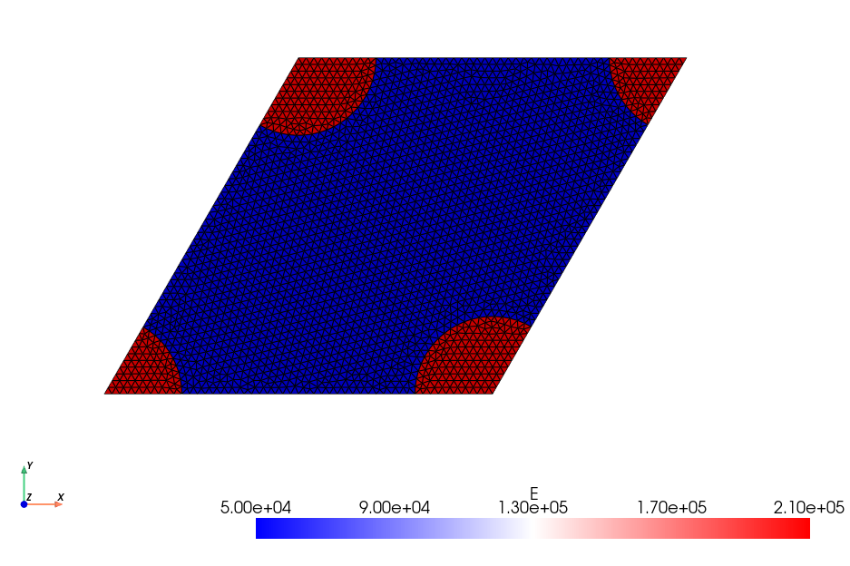
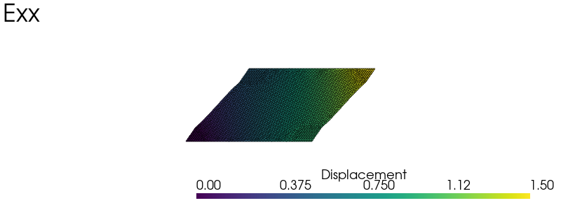
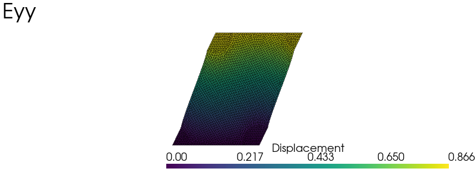
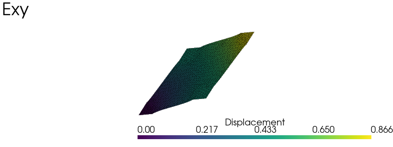
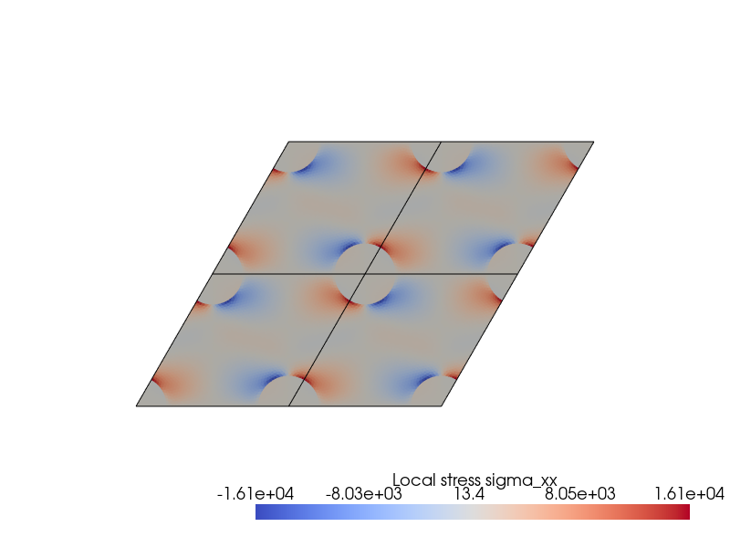

Periodic homogenization of linear elasticity #
Objectives
This tour shows how to perform periodic homogenization of linear elastic heterogeneous materials. In particular, we show how to define periodic boundary conditions without redundant constraints at the cell corners, and how to compute the effective stiffness tensor. \(\newcommand{\bu}{\boldsymbol{u}} \newcommand{\bv}{\boldsymbol{v}} \newcommand{\bt}{\boldsymbol{t}} \newcommand{\be}{\boldsymbol{e}} \newcommand{\ba}{\boldsymbol{a}} \newcommand{\by}{\boldsymbol{y}} \newcommand{\bE}{\boldsymbol{E}} \newcommand{\beps}{\boldsymbol{\varepsilon}} \newcommand{\bsig}{\boldsymbol{\sigma}} \newcommand{\T}{^{\text{T}}}\)
Attention
This tour requires DOLFINx v0.11 and the dolfinx_mpc add-on package (v0.11) to enforce periodic boundary conditions. Installation instructions are given in the dolfinx_mpc repository.
Download sources
See also
The finite-strain, three-dimensional extension of this tour is Finite-strain periodic homogenization of a soft open-cell foam .
We consider a 2D plane strain problem on a skewed unit cell of dimensions \(1\times \sqrt{3}/2\). Circular inclusions (tag 2) of radius \(R\) and elastic properties \((E_r, \nu_r)\) are embedded in a matrix material (tag 1) of properties \((E_m, \nu_m)\), following a hexagonal pattern. The hexagonal symmetry implies that the effective behavior is isotropic in the plane, a property that we verify numerically below.


Periodic homogenization framework#
The goal of homogenization theory is to compute the effective elastic moduli of the homogenized medium associated with a given microstructure. In a linear elastic setting, this amounts to solving the following auxiliary problem on the unit cell \(\mathcal{A}\):
where \(\boldsymbol{E}\) is the given macroscopic strain, \(\boldsymbol{v}\) a periodic fluctuation and \(\mathbb{C}(\boldsymbol{y})\) the heterogeneous elasticity tensor depending on the microscopic position \(\boldsymbol{y}\in\mathcal{A}\). By construction, the local strain is equal on average to the macroscopic strain: \(\langle \boldsymbol{\varepsilon} \rangle = \boldsymbol{E}\). Defining the macroscopic stress \(\boldsymbol{\Sigma}\) as the average of the local stress, \(\boldsymbol{\Sigma} = \langle \boldsymbol{\sigma} \rangle\), the auxiliary problem yields a linear relation between the loading \(\boldsymbol{E}\) and the resulting average stress:
where \(\mathbb{C}^\text{hom}\) is the effective stiffness tensor of the homogenized medium. Its components are computed by solving elementary load cases corresponding to the components of \(\boldsymbol{E}\) and averaging the resulting local stresses.
Total displacement as the main unknown#
The problem can also be written in terms of the total displacement \(\boldsymbol{u} = \boldsymbol{E}\cdot\boldsymbol{y} + \boldsymbol{v}\), with \(\boldsymbol{\varepsilon} = \nabla^\text{s} \boldsymbol{u}\). The periodicity condition then becomes:
where \(\boldsymbol{y}^{\pm}\) are opposite points on the unit cell boundary. This formulation is widely used in finite-element software since it only requires tying constraints between degrees of freedom. It is however not the easiest one to handle with dolfinx_mpc.
Periodic fluctuation as the main unknown#
Instead, we keep the initial formulation and use the periodic fluctuation \(\boldsymbol{v}\) as the main unknown. Periodicity is imposed with the create_periodic_constraint_geometrical method of dolfinx_mpc, which requires a map from the slave degrees of freedom to their master counterparts on the opposite side.
This elimination is consistent only if each slave is constrained once and maps onto masters that are neither slaves nor subject to a Dirichlet condition. A corner of the cell belongs to two edges: mapping the right edge onto the left one and the top edge onto the bottom one would constrain the top-right corner twice and chain the corners back to the bottom-left one. We therefore proceed hierarchically:
the interiors of the right and top edges are mapped onto the interiors of the left and bottom edges;
the four corners, which carry the same fluctuation by periodicity, are fixed to \(\bv = 0\) by a Dirichlet condition. This also removes the rigid body translations, which periodicity does not fix.
Important
Mapping the corners through two successive edge constraints creates chained slaves. Effective properties still look reasonable, but local fields near the corners are wrong and the discrete effective stiffness loses its symmetry. On the mesh of this tour, doing so changes the effective moduli by less than 0.01%, but introduces spurious shear–normal couplings in \(\mathbb{C}^\text{hom}\) and local stress errors near the corners reaching 3.6 times the maximum stress. The same hierarchy (faces, then ridges, then vertices) is used in 3D in Finite-strain periodic homogenization of a soft open-cell foam .
Implementation#
Unit cell geometry and periodic mesh#
The unit cell is a parallelogram generated by the vectors \(\ba_1\) and \(\ba_2\). It is convenient to work with the lattice coordinates \((\xi_1, \xi_2)\) of a point \(\by = \xi_1\ba_1 + \xi_2\ba_2\): the cell is \([0, 1]^2\) in these coordinates, the right edge is \(\xi_1 = 1\) and the top edge is \(\xi_2 = 1\).
import numpy as np
from mpi4py import MPI
import gmsh
import ufl
from dolfinx import fem, io, plot
import dolfinx.fem.petsc
import dolfinx_mpc
Lx = 1.0
Ly = np.sqrt(3) / 2.0 * Lx
c = 0.5 * Lx
R = 0.2 * Lx
h = 0.02 * Lx
corners = np.array([[0.0, 0.0], [Lx, 0.0], [Lx + c, Ly], [c, Ly]])
a1 = corners[1, :] - corners[0, :] # first periodicity vector
a2 = corners[3, :] - corners[0, :] # second periodicity vector
lattice = np.column_stack([a1, a2])
def lattice_coordinates(x):
"""Lattice coordinates (xi_1, xi_2) of points x of shape (2 or 3, N)."""
return np.linalg.solve(lattice, x[:2])
gdim = 2
comm = MPI.COMM_WORLD
model_rank = 0
MATRIX_TAG, INCL_TAG = 1, 2
The geometry is generated with the gmsh Python API and the Open Cascade kernel. A disk centered at each corner is fragmented with the cell, and the disk parts outside the cell are removed. The matrix is tagged 1 and the inclusions 2. The setPeriodic command then makes the meshes of opposite edges identical, so that each slave node has a matching master node.
We compute the unit cell area from the mesh for verification:
vol = comm.allreduce(
fem.assemble_scalar(fem.form(1 * ufl.dx(domain=domain))), op=MPI.SUM
)
print(f"Area: {vol:.6f} (expected {Lx * Ly:.6f})")
Area: 0.866025 (expected 0.866025)
Variational formulation with heterogeneous material properties#
In the legacy demo, the bilinear form used two terms with the dx(1) and dx(2) cell measures, one per phase. This approach does not scale well to many phases or to spatially varying properties. Instead, we use a single constitutive law for all phases, with Young’s modulus and Poisson’s ratio represented as piecewise constant (DG0) functions, see Create a piecewise constant field for spatially varying properties.
def create_piecewise_constant_field(domain, cell_markers, property_dict, name=None):
"""Create a DG0 function taking a constant value on each tagged subdomain.
Parameters
----------
domain : dolfinx.mesh.Mesh
Mesh object
cell_markers : dolfinx.mesh.MeshTags
Cell markers
property_dict : dict
Dictionary mapping region tags to values {tag: value}
name : str, optional
Name of the function
Returns
-------
A DG0 function
"""
V0 = fem.functionspace(domain, ("DG", 0))
k = fem.Function(V0, name=name)
for tag, value in property_dict.items():
k.x.array[cell_markers.find(tag)] = value
k.x.scatter_forward()
return k
E = create_piecewise_constant_field(
domain, cells, {MATRIX_TAG: 50e3, INCL_TAG: 210e3}, name="YoungModulus"
)
nu = create_piecewise_constant_field(
domain, cells, {MATRIX_TAG: 0.2, INCL_TAG: 0.3}, name="PoissonRatio"
)
lmbda = E * nu / (1 + nu) / (1 - 2 * nu)
mu = E / 2 / (1 + nu)
Our main unknown is the periodic fluctuation \(\bv\). The loading is imposed through the macroscopic strain \(\bE\), defined as a fem.Constant, and the total displacement \(\bu = \bE\cdot\by + \bv\) is rebuilt afterwards using ufl.SpatialCoordinate. The form ufl.inner(sigma(du), epsilon(u_)) * ufl.dx contains both bilinear and linear terms, the latter due to the macroscopic strain acting as a loading. We use ufl.system to split it into its bilinear and linear parts.
Eps = fem.Constant(domain, np.zeros((2, 2)))
Eps_ = fem.Constant(domain, np.zeros((2, 2)))
y = ufl.SpatialCoordinate(domain)
def epsilon(v):
return ufl.sym(ufl.grad(v))
def sigma(v):
eps = Eps + epsilon(v)
return lmbda * ufl.tr(eps) * ufl.Identity(gdim) + 2 * mu * eps
V = fem.functionspace(domain, ("P", 2, (gdim,)))
du = ufl.TrialFunction(V)
u_ = ufl.TestFunction(V)
a_form, L_form = ufl.system(ufl.inner(sigma(du), epsilon(u_)) * ufl.dx)
Periodic boundary conditions with dolfinx_mpc#
We first fix the four corners with a Dirichlet condition. Points are classified from their lattice coordinates.
tol = 1e-8
def on_cell_boundary(x):
"""Array of shape (2, N): True where lattice coordinate i equals 0 or 1."""
xi = lattice_coordinates(x)
return np.isclose(xi, 0.0, atol=tol) | np.isclose(xi, 1.0, atol=tol)
def corners_marker(x):
return np.all(on_cell_boundary(x), axis=0)
corner_dofs = fem.locate_dofs_geometrical(V, corners_marker)
bcs = [fem.dirichletbc(np.zeros((gdim,)), corner_dofs, V)]
We then map the interior of the right edge (\(\xi_1 = 1\)) onto the left edge with the translation \(-\ba_1\), and the interior of the top edge (\(\xi_2 = 1\)) onto the bottom edge with the translation \(-\ba_2\). Corners are excluded from both slave sets, and passing bcs ensures that Dirichlet dofs are never used as slaves.
def edge_slaves(i):
"""Interior of the edge xi_i = 1."""
def indicator(x):
xi = lattice_coordinates(x)
return np.isclose(xi[i], 1.0, atol=tol) & ~corners_marker(x)
return indicator
def translation(ai):
def relation(x):
out_x = x.copy()
out_x[0] -= ai[0]
out_x[1] -= ai[1]
return out_x
return relation
mpc = dolfinx_mpc.MultiPointConstraint(V)
mpc.create_periodic_constraint_geometrical(V, edge_slaves(0), translation(a1), bcs)
mpc.create_periodic_constraint_geometrical(V, edge_slaves(1), translation(a2), bcs)
mpc.finalize()
Solving the elementary load cases#
We now define the problem instance. We must use the LinearProblem provided by dolfinx_mpc rather than that of dolfinx.fem.petsc, since it takes the MultiPointConstraint object as an argument. The solution \(\bv\), and the total displacement \(\bu\), must be defined on the constrained function space mpc.function_space rather than on V.
u = fem.Function(mpc.function_space, name="Displacement")
v = fem.Function(mpc.function_space, name="Periodic_fluctuation")
problem = dolfinx_mpc.LinearProblem(
a_form,
L_form,
mpc,
bcs=bcs,
u=v,
petsc_options_prefix="periodic_elasticity_",
petsc_options={"ksp_type": "preonly", "pc_type": "lu"},
)
We consider three elementary load cases: macroscopic uniaxial strain in the \(x\) and \(y\) directions and macroscopic shear in the \(xy\) plane. For each load case, we update the macroscopic strain \(\bE\), solve the problem and rebuild the total displacement from the periodic fluctuation. We then compute the components of the macroscopic stress \(\boldsymbol{\Sigma}\). Since the load cases are unit strains, they directly give the components of the effective stiffness \(\mathbb{C}^\text{hom}\) in Voigt notation.
elementary_load = [
np.array([[1.0, 0.0], [0.0, 0.0]]),
np.array([[0.0, 0.0], [0.0, 1.0]]),
np.array([[0.0, 0.5], [0.5, 0.0]]),
]
load_labels = ["Exx", "Eyy", "Exy"]
dim_load = len(elementary_load)
Eps_y = fem.Expression(ufl.dot(Eps, y), mpc.function_space.element.interpolation_points)
C_hom = np.zeros((dim_load, dim_load))
for nload in range(dim_load):
Eps.value = elementary_load[nload]
u.interpolate(Eps_y)
problem.solve()
u.x.array[:] += v.x.array[:]
plot_warped(u, scale=0.5, plot_mesh=True, title=load_labels[nload])
for nload_ in range(dim_load):
Eps_.value = elementary_load[nload_]
C_hom[nload, nload_] = (
comm.allreduce(
fem.assemble_scalar(fem.form(ufl.inner(sigma(v), Eps_) * ufl.dx)),
op=MPI.SUM,
)
/ vol
)



Effective stiffness#
with np.printoptions(suppress=True, precision=0):
print(C_hom)
[[65561. 17440. 0.]
[17440. 65561. 0.]
[ 0. 0. 24061.]]
The effective stiffness is symmetric and isotropic up to the finite element discretization error. With \(\lambda^\text{hom} = \mathbb{C}^\text{hom}_{xxyy}\) and \(\mu^\text{hom} = \mathbb{C}^\text{hom}_{xyxy}\), isotropy requires \(\mathbb{C}^\text{hom}_{xxxx} = \mathbb{C}^\text{hom}_{yyyy} = \lambda^\text{hom}+2\mu^\text{hom}\).
lmbda_hom = C_hom[0, 1]
mu_hom = C_hom[2, 2]
print(
f"Symmetry check: max |C - C^T| / max |C| = {np.max(np.abs(C_hom - C_hom.T)) / np.max(np.abs(C_hom)):.1e}"
)
print(
f"Isotropy check: C_xxxx = {C_hom[0, 0]:.0f}, C_yyyy = {C_hom[1, 1]:.0f}, lambda + 2 mu = {lmbda_hom + 2 * mu_hom:.0f}"
)
Symmetry check: max |C - C^T| / max |C| = 1.4e-15
Isotropy check: C_xxxx = 65561, C_yyyy = 65561, lambda + 2 mu = 65561
Note
The discrete effective stiffness is symmetric to solver precision. For load cases \(i\) and \(j\) with fluctuations \(\bv_i\) and \(\bv_j\), the averaged stress gives \(\mathbb{C}^\text{hom}_{ij} = \langle\bsig_i\rangle:\bE_j = \langle\bsig_i:(\bE_j+\nabla^\text{s}\bv_j)\rangle\), because \(\bv_j\) is an admissible test function of load case \(i\). The right-hand side is symmetric in \(i\) and \(j\). This requires \(\bv_j\) to belong exactly to the constrained test space, which is precisely what an inconsistent treatment of the corners breaks.
Since the problem is solved in plane strain, \(\lambda^\text{hom}\) and \(\mu^\text{hom}\) are the in-plane Lamé coefficients of the transversely isotropic homogenized medium. The equivalent Young’s modulus and Poisson’s ratio for in-plane loading follow from the usual isotropic formulas:
E_hom = mu_hom * (3 * lmbda_hom + 2 * mu_hom) / (lmbda_hom + mu_hom)
nu_hom = lmbda_hom / (lmbda_hom + mu_hom) / 2
print(f"Effective Young's modulus: {E_hom:.0f}")
print(f"Effective Poisson's ratio: {nu_hom:.3f}")
Effective Young's modulus: 58232
Effective Poisson's ratio: 0.210
Local stress field#
We finally plot the local stress \(\sigma_{xx}\) of the last load case (macroscopic shear) on \(2\times 2\) repeated unit cells. The field is continuous across the cell edges and, in particular, around the corners.
W0 = fem.functionspace(domain, ("DG", 0))
sig_xx = fem.Function(W0, name="sigma_xx")
sig_xx.interpolate(fem.Expression(sigma(v)[0, 0], W0.element.interpolation_points))
